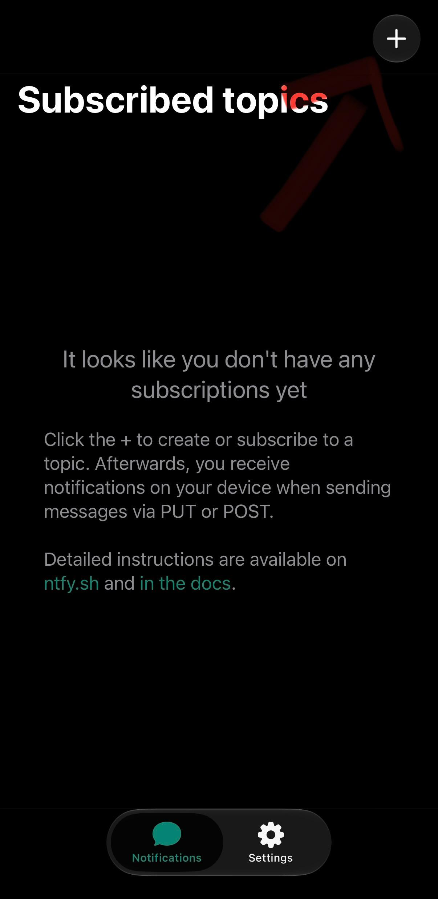
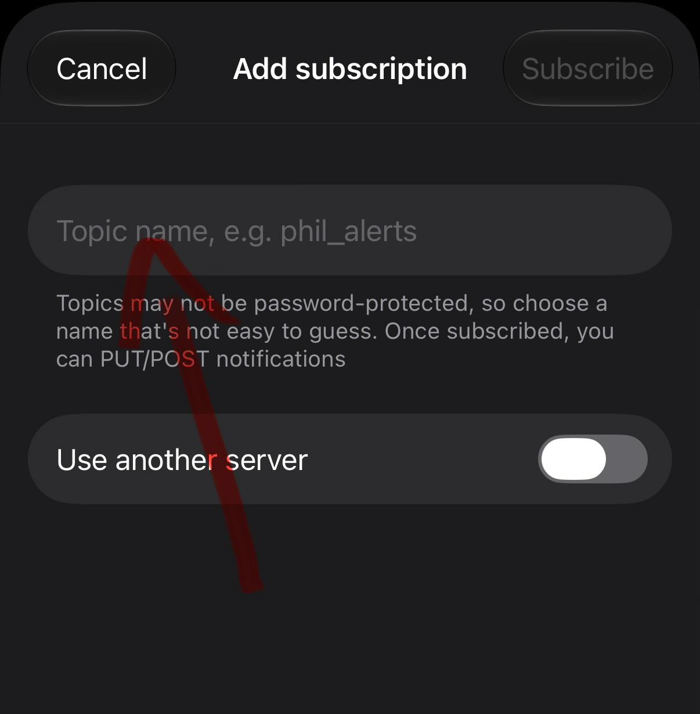

📲 Recevoir les notifications
Installez l'application gratuite ntfy sur votre téléphone.
iPhone · App StoreSamsung / Android · Google Play🧭 Guide en deux étapes

Étape 1 : ouvrez ntfy et appuyez sur le bouton + en haut à droite.

Étape 2 : saisissez le nom du canal reçu par e-mail dans « Topic name », puis appuyez sur « Subscribe ».
Captures d’écran de l’application ntfy sur iPhone. L’affichage peut différer sur Android.
📩 3. Recevoir le nom du canal
Inscrivez-vous avec votre adresse e-mail. Après confirmation de votre inscription, vous recevrez automatiquement le nom du canal ntfy et les instructions.
S’inscrire par e-mail